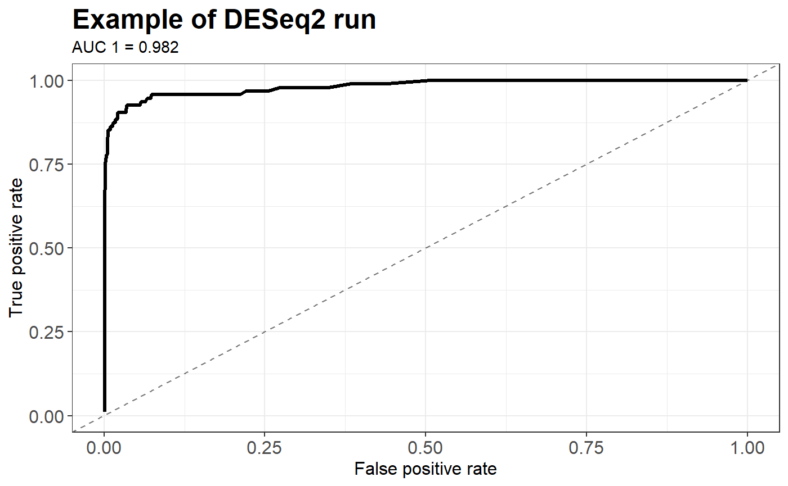
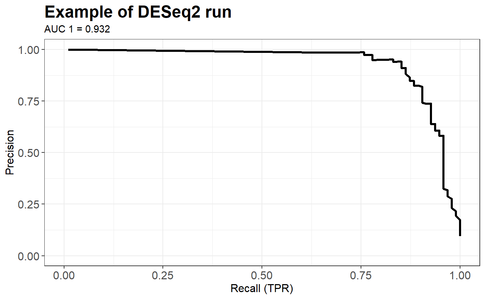
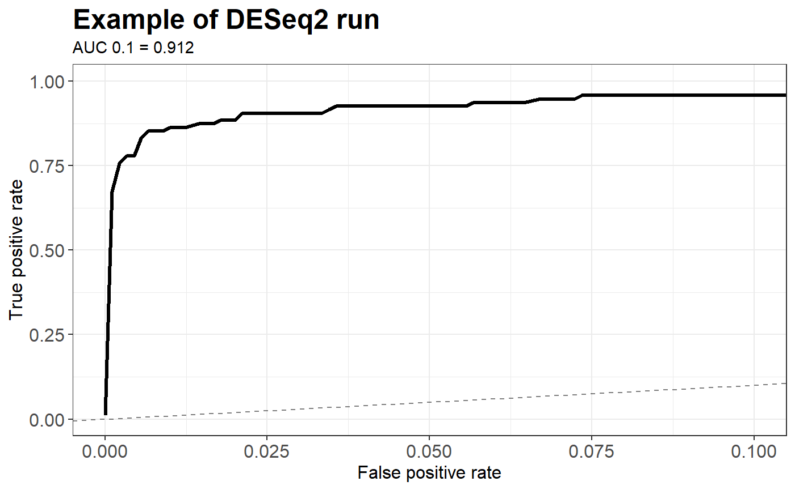

metaDAF.RmdThe metaDAF package provides differentially abundant metagenomic data generation, wrappers for the most commonly used function for the analysis and visualization tools. Thus, the whole analysis from input generation to output display can be reduced to a few lines.
Here, a artificial dataset is generated based on the Qin dataset. It is done using the EDDA::generateData() function. In the following example 10 control and 10 case individuals are generated. With default parameter, the count table obtained has 1000 features, 10% of them being differentially abundant (half up and half down). The fold-changes of these features follow a normal distribution with paramters \(\mu\) = 5 and \(\sigma^2\) = 1.
dataTest <- build_DAF_data(count_table = QinJ_2012_table_count,
metadata = QinJ_2012_metadata,
group_var = NULL, simulation = TRUE,
ControlRep = 5, FC = "Norm(5,1)", numDataPoints = 20000)The run_DAF_analysis() function behavior depends on the composition of the data provided and the names of the methods called. Here, since it is a simple (non-repeated) dataset and a unique method, it will perform a simple DAF analysis.
res <- run_DAF_analysis(data = dataTest, method = "deseq2")The output of this function gives a list of the features and their respective p-value. Such information is then used as threshold variable to compute performances metrics : True positive Rate (tpr or recall), False Positive Rate (fpr) and Precision.
plot_data <- generate_curve_data(dt = res$curated,
threshold_var = "adjusted_pvalue")With the performances metrics, one can easily display ROC curve or Precision-Recall curve. Again, the curve_plot() function adapt itself to the input data. Here, with only one run and one method, a simple ROC curve is displayed. On top of that, the Area Under Curve can be calculated for the all curve as in the example below or only for a part of it up to a given FPR.
curve_plot(curve_data = plot_data, type = "roc",
plot_title = "Example of DESeq2 run", auc_limit = 1)
curve_plot(curve_data = plot_data, type = "pr",
plot_title = "Example of DESeq2 run", auc_limit = 1)
curve_plot(curve_data = plot_data, type = "roc", auc_limit = 0.1,
plot_title = "Example of DESeq2 run") + coord_cartesian(xlim = c(0, 0.1))